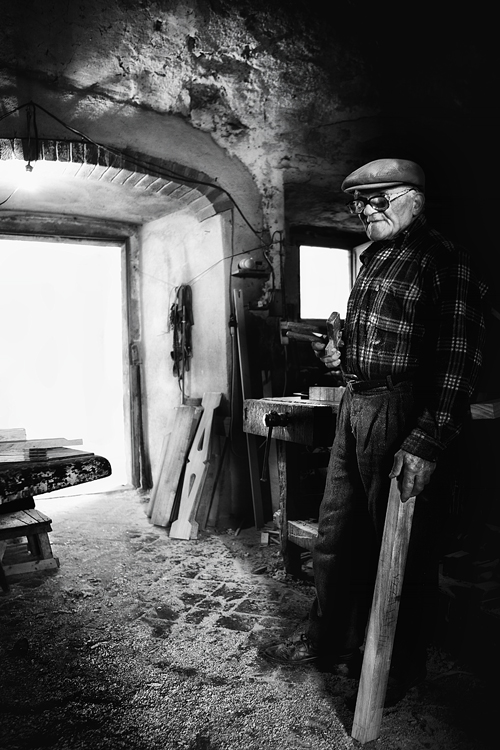

ITALIAN HANDMADE EXCELLENCE
Giuseppe, Apulian olive wood carpenter
In a white narrow alley around a corner there is a little shop owned by Giuseppe, a master in the art of olive wood crafting.
For 50 years Giuseppe spent his days strongly caressing and shaping the wood, producing with his own gnarled hands wonderful kitchen tools and homeware from this ancient treasure of the land of Apulia.

Every creation is a unique piece, a symbol of creativity, experience, dedication and time.
And like the olive tree itself, every creation is a symbol of beauty and durability. Elegant and refined yet simple and practical, with his excellent Italian mastery Giuseppe knows how to craft enchant and wonder, with pieces that fit every location, from the classical to the most modern.